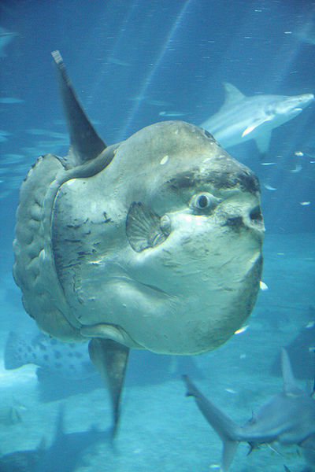

This time I'm using fishes, so we're changing it up...
The ocean sunfish, this BIG BOY- they're kinds useless.
Scientists even disagree on how they move. Some say theres no more than a little wiggle, and they don't have much control; while others propose they're decent powerful swimmers. Some claim that they should just spit water out of their lips to get direction. Their back fin may be used, but it doesn't grow. The cells are being created since it just keeps folding in on itself, but they aren't being placed where they should be!

Consequently, they lack swim bladders. You know, the one thing every fish needs to ensure that it can stay upright when it stops moving and doesn't simply sink to the ocean's floor. This species, which can hardly move at all, must continue its constant journey across the water in order to avoid sinking. EXCEPT. Except when they get stuck on top of the water, which can occur. This frequently occurs! Without the swim bladder, if the water pushes over-THE THINNEST BUT LARGEST MOST TOPPLE-ABLE FISH ON THE PLANET...
No other species on Earth has a greater need for a swim bladder than this little, cute-dumb creature. Since it is unknown how they gain any actual energy in the first place, some scientists have suggested that when they get stuck, they are taking energy from the sun. So I think they need the sun. The good news is that when they become trapped in that position, it provides opportunity for birds to arrive on their island of a body and consume the parasites and bugs from their skin.
So these big fishes, they aren't predators either. The most dangerous thing about them is, as you may have guessed, their dumbness. They've already been responsible for one person's death after it leaped aboard a boat…on a person.
They mostly consume jellyfish because, well, they have to eat anything without a brain and that may accidentally drift into their mouths. The food they do eat have absolutely little nutritional value, and since they are so ridiculously large, they need to eat a lot of it in order to survive. Dumb.
They DO occasionally get eaten, though. Truth be told, RARELY (because they aren't really used as food sources). Animals like seals normally just play with their fins for fun. (Seals are officially jerks)
This animal is oblivious to its role as a fish and has so little to do, right? But apparently it wants to stick around so it lays just a boat load of eggs- most out of any fish . At one time, it will produce 300 million eggs. 300,000,000. It lives because it is statistically impossible, that none of those 300,000,000 (the number of times they lay eggs) would still be alive at the end of the day.